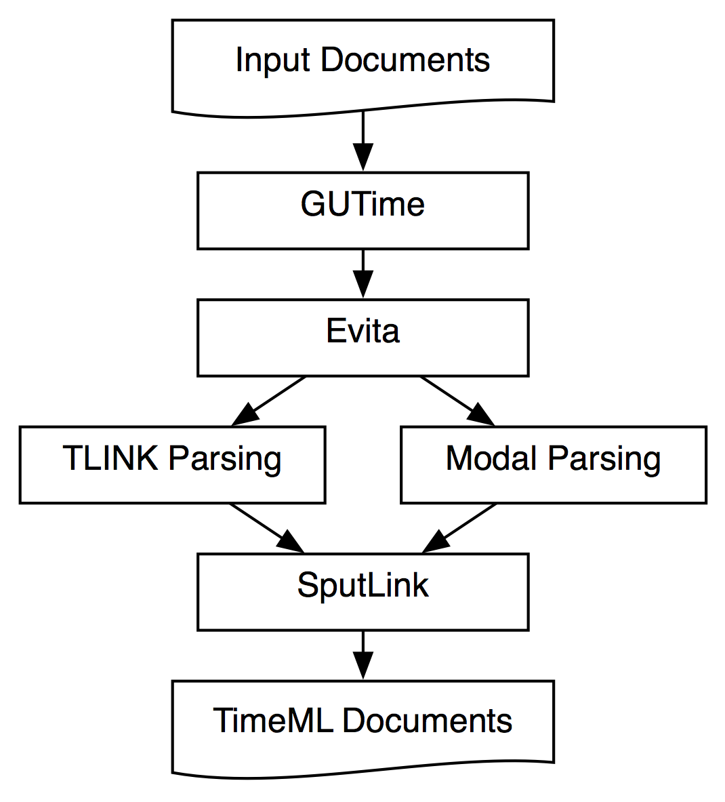

Overview of TARSQI Components
Brandeis University and Georgetown University, January 2006
The TARSQI Project (Temporal Awareness and Reasoning Systems for
Question Interpretation) aims to enhance natural language question
answering systems so that temporally-based questions about the events
and entities in news articles can be addressed appropriately.
Architecture
The TARSQI Project has created a series of tools for temporal
information extraction. All these tools can be used as standalone
programs that automatically identify TimeML tags in a document, but
they can also be called
in sequence as in figure 1.
|  |
| Figure 1: TARSQI Component Architecture |
In the following sections we describe the TARSQI modules that identify
and extract TimeML-based entities and relations in news texts.
GUTime
The GUTime tagger is based on MITRE's Tempex tagger and recognizes the
extents and normalized values of time expressions. It handles both
absolute times (e.g., June 2, 2003) and relative times (e.g.,
Thursday, today, yesterday). GUTime extends TempEx to handle
time expressions based on the TimeML TIMEX3 standard (timeml.org),
which allows a functional style of encoding offsets in time
expressions. For example, last week could be represented not
only by the time value but also by an expression that could be
evaluated to compute the value, namely, that it is the week preceding
the week of the document date. GUTime also handles durations, a
variety of temporal modifiers, and European date formats. GUTime has
been benchmarked on training data from the Time Expression Recognition
and Normalization task (timex2.mitre.org/tern.html) at 0.85, 0.78, and
0.82 F-measure for timex2, text, and val fields respectively.
GUTime has been downloaded by 22 groups worldwide, listed below.
EVITA
Evita is an domain-independent event recognition tool that performs two
main tasks:
robust event identification; and analysis of grammatical features, such
as tense and aspect. Event identification is based on the notion of
event as defined in TimeML. Evita uses dictionaries, hand-crafted
rules and machine ruling, depending on the subtask at hand. Evita
relies on preprocessed input with part-of-speech tags and
chunks. Current performance of Evita against TimeBank is 0.75
precision, 0.87 recall, and 0.80 F-measure. Precision is actually much
higher, but takes a hit
due to Evita's over-generation of generic events, which were not
annotated in TimeBank.
Modal Parsing
Slinket is a modal parser whose task is to automatically
introduce SLINKs in text, which in TimeML specify subordinating
relations
between pairs of events; it then classifies them into factive,
counterfactive, evidential, negative evidential, and modal categories,
based on
the modal force of the subordinating event. Slinket requires chunked
input with events. Slinket evaluates against TimeBank at 0.91
precision and 0.59 recall (F-measure 0.71).
S2T is an added module to Slinket. It derives temporal information
from modality: it takes SLINKs and creates TLINKs. It uses tense and
aspect information as well as structural information provided by
Slinket's rule set. S2T can be viewed as a specialization of
GUTenLink (see next section). S2T was evaluated by hand against a
set of 180 SLINKs and checked in at 0.77 precision and 0.83 recall.
TLINK Generation
The GUTenLINK tagger uses 187 hand-developed syntactic and lexical
rules.
The tagger takes pairs of TLINKable items (event and/or time) and
searches for the single most-confident rule to apply to it, if any, to
produce a labeled TLINK between those items. Each (if-then) rule has a
left-hand side which consists of a conjunction of tests based on
TimeML-related features, and a right-hand side which is an assignment
to one of the TimeML TLINK classes. The rules are grouped into several
different classes: (i) the event is anchored with or without a signal
to a time expression within the same clause (ii) the event is anchored
with-out a signal to the document date speech time frame (as in the
case of reporting verbs in news, which are often at or offset slightly
from the speech time) (iii) an event is linked to another event in the
same sentence and (iv) the event in a main clause of one sentence is
anchored with a signal or tense and/or aspect cue to an event in the
main clause of the previous sentence. GUTENLINK has a 56.19% accuracy
when evaluated for TLINK labeling on the TimeBank 1.2 (186 documents),
and 88.53% accuracy on the Opinion Corpus (73 documents). This
accuracy is sufficient for it to be useful as a preprocessor for use
in human TLINK annotation.
SputLink
SputLink is a temporal closure and reasoning component that takes known
temporal
relations in a text and derives new implied relations from them, in
effect making explicit what was implicit. SputLink adds global TLINKS
that are not easily derived by other means. In addition, SputLink can
be used to detect inconsistencies in an annotated document.
A SputLink evaluation on TimeBank showed that SputLink more than
quadrupled the amount of temporal links in TimeBank, and adds
non-local links that were systematically missed by the human
annotators. Sputlink also makes a complete annotation feasible by
structuring the annotation task. Hidden temporal information in the
text is computed and output by Sputlink.
Current Work
Current issues are the following:
- The preprocessing pipeline depended heavily on the Alembic
Natural Language tools, which turned out to be rather brittle and are
not supported anymore. We're converting to using the Brill tagger, a
home-grown stemmer, and a customized Yamcha chunker.
- Interaction between Evita and GUTime is not optimal.
- GUTenLink has been redesigned and is currently being rewritten.
- SputLink is not hooked up yet with our standard TimeML parsing
and generation modules.
Finally, we envision GUTenLINK and S2T as components in a larger
machine-learning based framework for ordering events. Initial work on
machine learning of TLINKs has been extremely encouraging.
Another
component which will be developed will leverage document-level
inference which required annotation of a reference time for the event
in each finite clause.